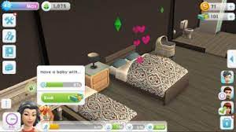

You need to reach level 7 and buy all the items from the wedding collection to unlock the wedding quest. after you complete the quest,there will be a sign " your sims are now married". To have a baby you need to reach level 11 and have a romantic reletationship with other sim.
Once your Sims have purchased a baby bassinet, they will be able to become parents. Tap the bassinet to get a series of options: Adopt a Boy With…, Adopt a Girl With…, and Have a Baby With…Tap on Adopt
IF...you want a natural baby:
Regular WooHoo never results in pregnancy, and Sims who are hoping to start a family in this way need to use the 'Try for Baby' option instead.
No, you can't have twins in the sims mobile because you can only have one crib at a time and you would need two cribs for two babies.